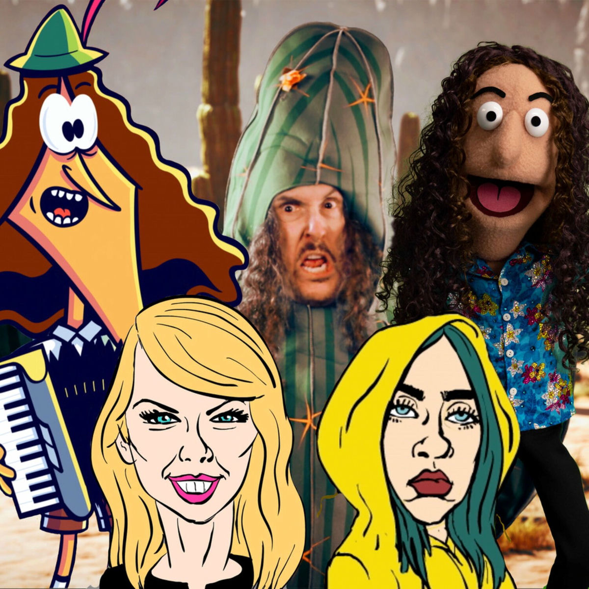

So you're a tough guy
Like it really rough guy
Just can't get enough guy
Chest always so puffed guy
I'm that bad type
Make-your-mama-sad type
Make-your-girlfriend-mad type
Might-seduce-your-dad type
I'm the bad guy
Duh!
So, hello from the other side
I must have called a thousand times
To tell you "I am sorry"
For breaking your heart
But it don't matter
It clearly doesn't tear you apart, anymore
I can buy myself flowers
Write my name in the sand
Talk to myself for hours
Say thing you don't understand
I can take myself dancing
And I can hold my own hand
Yeah, I can love me better
Than, you can
We don't talk about Bruno no, no, no
We don't talk about Bruno
I used to think I was smart
But you make me look so naive
The way you sold me for parts
You snuk your teeth into me, oh
Blood sucker (blood), dream crusher
Bleedin' me dry like a gosh darn vampire
Yeah, I'm gonna take my horse to the old town road
I'm gonna ride till I can no more
I'm gonna take my horse to the old town road
I'm gonna ride till I can no more
Can't nobody tell me nothing?
You can't tell me nothing (no)
Can't nobody tell me nothing?
Despacito, quiero respirar tu cuello despacito
Deja que te diga cosas al oído
Para que te acuerdes si no estas conmigo
Mm-mm
I'm in love with the shape of you
We push and pull like a magnet do
Every day discovering something brand new
I'm in love with your body
Oh-I-oh-I-oh-I-oh-I
I'm in love with your body
Oh-I-oh-I-oh-I-oh-I
Yodelayheehoo
'Cause uptown funk gon' give it to you
'Cause uptown funk gon' give it to you
Saturday night and we in the spot
Don't believe me just watch
Hey!
Doh Doh-doh-doh, doh-doh
I want you to park that big Mack truck, right in this little garage
Yeah, you messing with some
Bring a bucket and a mop for this
Bring me everything you got for this
I'm talking WAP, WAP, WAP, that some
Thank you (next)
Thank you (next)
Thank you (next)
I'm so super grateful for my ex
Thank you (next)
Thank you (next)
Thank you (next)
Super-duper grateful for my ex
I stay out too late
Got nothing in my brain
That's what people say, mm-mm
That's what people say, mm-mm
'Cause the players gonna play, play, play, play, play
And the haters gonna hate, hate, hate, hate, hate
I just wanna shake, shake, shake, shake, shake
I shake it off, I shake it off (hoo-hoo-hoo)
Heartbreakers gonna break, break, break, break, break
And the fakers gonna fake, fake, fake, fake, fake
I just wanna shake, shake, shake, shake, shake
I shake it off, I shake it off
That's why I'm gonna shake it off
(Gonna shake it off, watch me shake it off)
(Shake, shake, shake it off)
Hey!